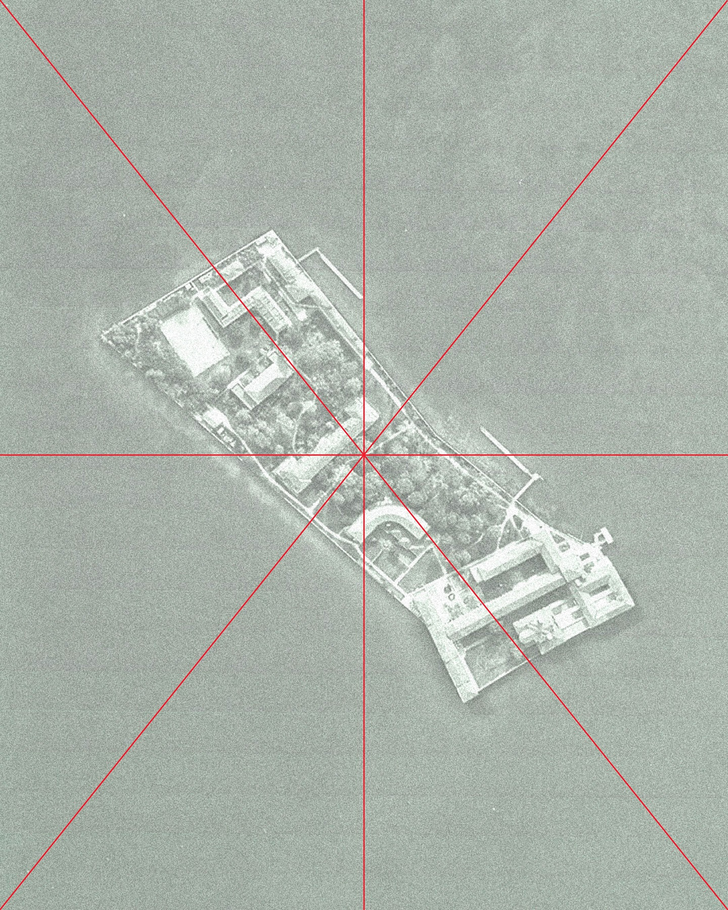
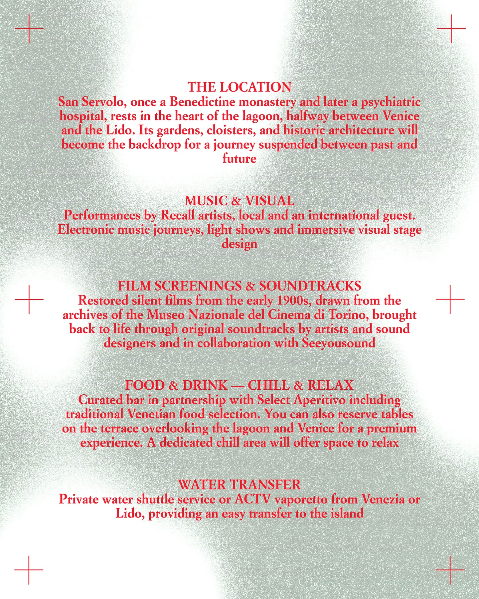
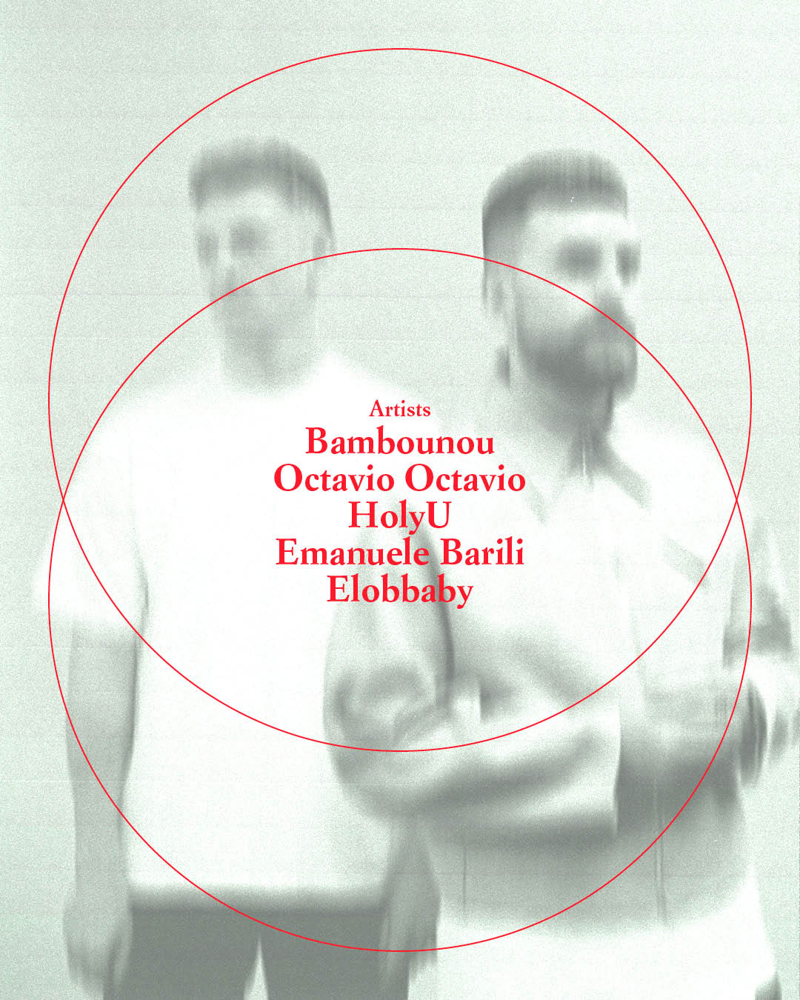
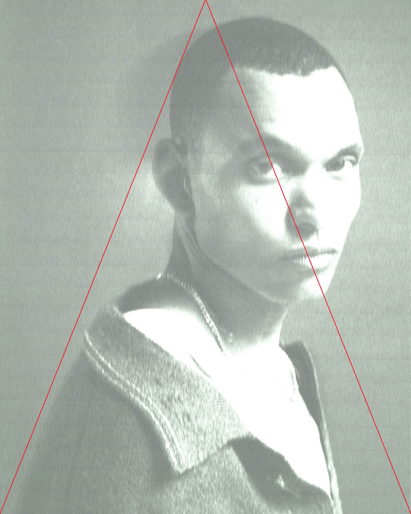

Recall – San Servolo
With Giga
2025
Recall San Servolo is a multidisciplinary festival that transforms the Venetian island into an open-air laboratory of sound and vision during the 2025 Venice Film Festival. Combining live music, film screenings.




I designed the visual identity and festival imagery, built around three key elements: cinematic composition and framing marks recalling the language of film; the island and its mirrored reflections, expressed through symmetrical typography; and fluid visual rhythms inspired by the movement of water. Together, these elements shape an identity that visually embodies the festival’s atmosphere, suspended between cinema and sound.